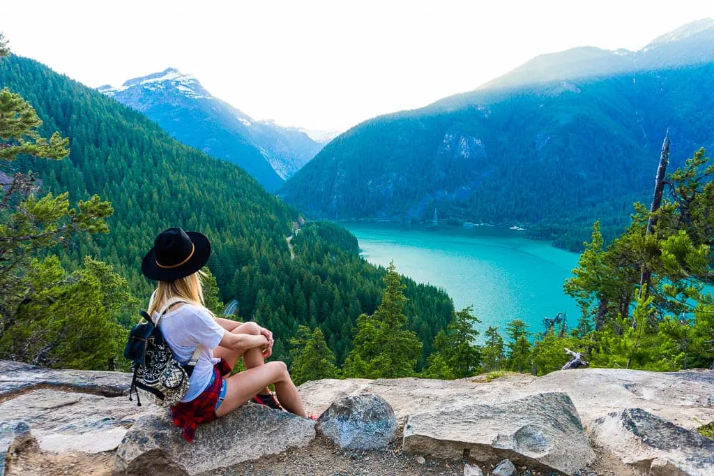

Your Guide To Portland Dates :)
Home
Spring
Summer
Fall
Winter
Seattle, WA
Bend, OR
John Day Fossil Bed, OR
Northern Cascades, WA
Steens, Alvord, and Hot Springs, OR
Seattle, Washington
Drive time from Portland: 3 hours
Space Needle Observation Deck
Pike Place
Seattle Great Wheel
Chihuly Glass Sculpture Museum
Gasworks Park
Mailbox Peak
Rattlesnake Ledge
Wallace Falls
Heybrook Lookout
Bend, Oregon
Drive time from Portland: 3 hours
Explore Downtown
Visit Sisters, OR
Skylight Cave
Smith Rock State Park
No Name Lake + Broken Top Mountain
Sparks Lake
Newberry National Volcanic Monument
Paulina Lake Hot Springs
Oregon Badlands Wilderness
John Day Fossil Bed, Oregon
Drive time from Portland: 3.5 hours
Clarno Unit
Sheep Rock Unit
Painted Hills
Sutton Mountain
Northern Cascades, Washington
Drive time from Portland: 6 hours
Stop in the western-themed town of Winthrop
Cascade Pass & Sahale Arm
Hidden Lake Lookout
Diablo Lake Vista Point
Thunder Knob

Sourdough Mountain Overlook
Maple Pass Loop
Chain Lake Loop
Picture Lake
Yellow Aster Butte
Winchester Mountain
Steens Mountain Wilderness, the Alvord Desert, and Hot Springs, Oregon
Drive time from Portland: 7 hours
Wildhorse Lake
Pike Creek Canyon
Alvord Desert Hot Springs
Willow Creek Hot Springs
Hart Mountain Hot Springs
Petroglyph Lake and Poker Jim Rim
Jump to Top